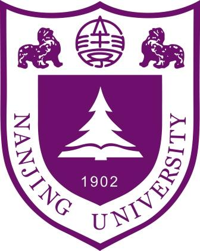

Xian-Jin Gui @ , NJU-CS
| 桂贤进 Xian-Jin Gui (X.-J. Gui) Master Student LAMDA Group Department of Computer Science & Technology Nanjing University, Nanjing 210023, China. Supervisor: Prof. Wei Wang Email: guixj [at] lamda.nju.edu.cn |
 |
Work Experience
I joined Huawei CBG and work as a recommender system Algorithm Engineer after obtaining my M.Sc. degree in July 2021. Here is my LinkedIn profile.
From March 2023, I have transfered to the department Pangu Large Model Group in Huawei Could and work as a LLM Algorithm Expert.
Recruitment
If you want to work as a LLM engineer after obtaining Master degree or Doctor degree, please fell free to contact me by E-mail. We have some work opportunities in HUAWEI Cloud Computing for Pangu Large Model.
-
For job description, please see this page---LLM Job Description.
Educational Biography
I received my B.Sc. degree in Information and Computing Science from Department of Mathematics, Nanjing University, China in June 2018.
From September 2018, I became a M.Sc. student under the supervision of Prof. Wei Wang in the LAMDA Group without entrance examination.
In July 2021, I obtained my M.Sc. degree.
Main Research Interests
Here is my Google Scholar profile.-
Learning with Noisy Labels
Here is a list of recent papers on learning with noisy labels: https://github.com/guixianjin/noisy_label_papers
-
Class-Imbalanced Learning
Publications
X.-J. Gui, W. Wang, and Z.-H. Tian. Towards Understanding Deep Learning from Noisy Labels with Small-Loss Criterion. In: Proceedings of the 30th International Joint Conference on Artificial Intelligence (IJCAI'21), virtual, 2021, pp. 2469-2475. [PDF] [Slides] [Poster] [Code] [Code in Gitee] [Code in Github]
Z. Han, X.-J. Gui, C. Cui, and Y. Yin. Towards Accurate and Robust Domain Adaptation under Noisy Environments. In: Proceedings of the 29th International Joint Conference on Artificial Intelligence (IJCAI'20), virtual, 2020, pp. 2269-2276. [PDF] [Code]
Z. Han, X.-J. Gui, H. Sun, Y. Yin and S. Li. Towards Accurate and Robust Domain Adaptation Under Multiple Noisy Environments. IEEE Transactions on Pattern Analysis and Machine Intelligence (T-PAMI). [PDF]
X.-J. Gui, B.-B. Yang, H. Ren, Y. Hu and W. Wang. Time Matters: A Novel Real-Time Long- and Short-term User Interest Model for Click-Through Rate Prediction. Technical Report. [PDF]
Latest News
August,2018: Attend CCDM2018 in Ji'nan, Shandong.
August,2018: Attend PRICAI2018 in Nanjing, Jiangsu.
Teaching Assistant
《机器学习理论研究导引》in Spring, 2020. [教材豆瓣链接].
Awards & Honors
The excellent students of Nanjing University. Nanjing, 2015
Outstanding graduate from Nanjing University. Nanjing, 2018
Other Resources
Correspondence
Laboratory
Room 327, Computer Science Building, Xianlin Campus of Nanjing University
Mail Address
Xian-Jin Gui
National Key Laboratory for Novel Software Technology,
Nanjing University, Xianlin Campus Mailbox 603,
163 Xianlin Avenue, Qixia District,
Nanjing 210023, China